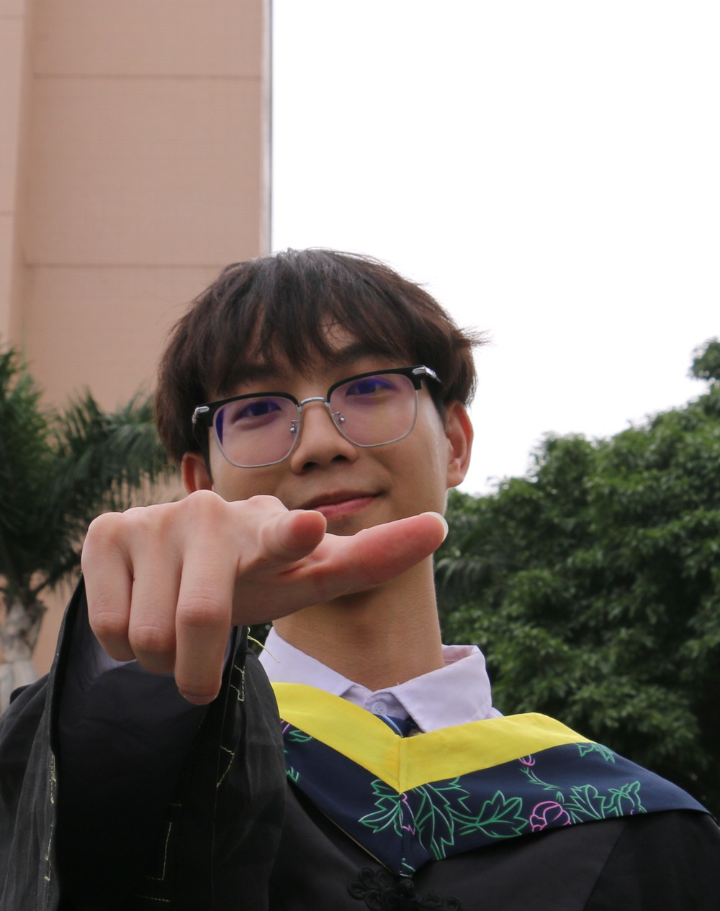
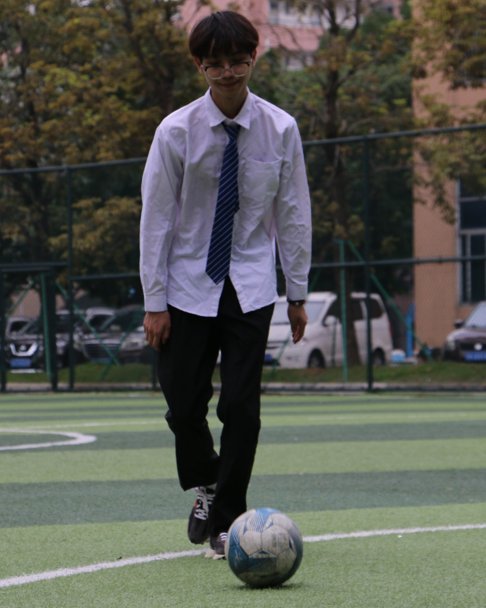

INTERFACE STUDY / 概念示意
仓库管理系统
面向仓储管理需求，参与前端开发与交互优化，将库存信息转化为清晰可读的数据视图。
HELLO, NICE TO MEET YOU
深圳大学 · 人工智能方向 · 研一
正在学习强化学习，也喜欢运动和听歌。
这里记录一些做过的事，和还想继续探索的方向。

点点「学习」或「生活」，换个角度认识我。
你好，我是林胜，现在在深圳大学读研一，学习人工智能，关注强化学习。对我来说，学一个新东西最有意思的部分，是慢慢弄明白它，再试着用起来。
本科在五邑大学学习电子信息工程（信息安全），做过仓库管理项目，也在机器人自动化企业实习过。学习之外，我喜欢运动和听歌。很高兴你来这里认识我。
我目前在深圳大学读研一，学习人工智能，关注强化学习。我想继续弄明白：智能体如何通过与环境交互，慢慢学会做决策？
本科时，我做过仓库管理项目，也参与过 AGV 平台插件开发和 Python 编程竞赛。我喜欢边理解、边动手，把学到的东西试着用起来。
离开屏幕后，我喜欢运动，也喜欢听歌。动一动，或者听一首歌，是我给日常换个节奏的方式。
学习、项目和竞赛是一部分，生活里还有许多轻松的小片段。愿意留一点时间给喜欢的事，也很高兴认识同样好奇的你。

02 / SELECTED EXPERIENCE
项目实践、实习和竞赛。
每一段经历，都留下了一点收获。
面向仓储管理需求，参与前端开发与交互优化，将库存信息转化为清晰可读的数据视图。
在机器人自动化场景中参与平台插件功能开发，连接前端交互与后端信息，让任务信息更有条理。
参加第十六届蓝桥杯 Python B 组大赛，获得省级二等奖。以编程竞赛积累问题求解的实践经历。
以上为个人真实经历；前两个项目封面为原创概念示意，并非实际系统截图。
03 / LEARNING & TOOLKIT
已有的经验是起点，
想弄明白的问题，还在不断增加。
当前学习方向，关注智能体如何通过与环境交互学习决策。
在实际项目中使用 Vue.js 开发界面，以 ECharts 展示数据，并通过 Axios 连接接口。
学习 Python、Java 与数据结构，参加算法、数据分析和数学建模相关竞赛。
04 / SAY HELLO
关于学习、项目，或最近听到的一首歌，
都可以来聊聊。